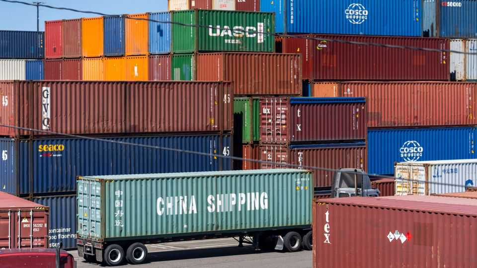
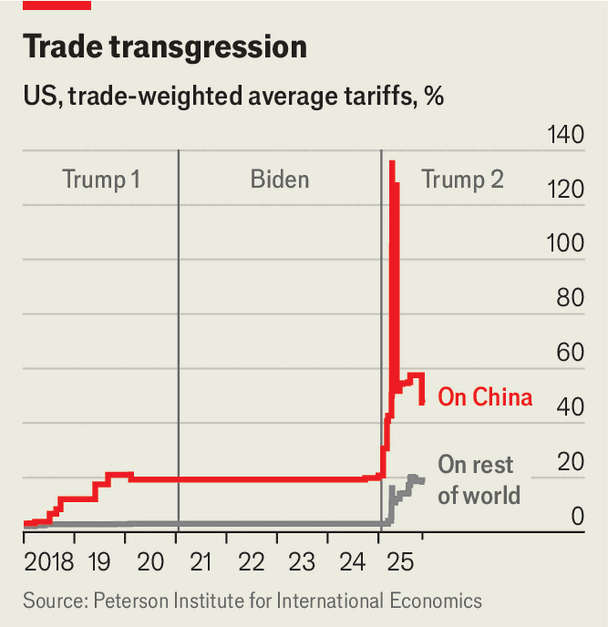

The White House’s absurd claim of a Chinese transshipment “scam”
High tariffs on Chinese goods have had predictable effects

Aug 20th 2026
IN G.K. CHESTERTON’S parable of the fence, those eager to tear down seemingly useless structures are urged to understand why they were built in the first place. Chesterton’s fence has long been received wisdom among American conservatives of a certain age, but Peter Navarro, Donald Trump’s chief trade ideologue, seems to have missed the memo. In a new paper published by Mr Navarro’s office in the White House, titled “The Great Transshipment Scam”, dozens of countries from Japan to Jordan stand accused of abetting a Chinese plot to dodge American tariffs. Absurd as this claim is, the paper is nevertheless a vivid exposition of the Trump administration’s muddled thinking on trade.
Start with the “great reallocation”, Mr Navarro’s term for the shifts that followed Mr Trump’s first wave of tariffs on Chinese goods in 2018. At the time, free-traders warned that a gap in tariff rates between China and the rest of the world would backfire. It would create an irresistible incentive to evade duties, legally or otherwise, while crimping growth. America understood this well when, in the 1940s, it was the primary author of a global trading system based on non-discrimination.

Mr Trump charged ahead anyway. The average tariff-rate differential between China and the rest of the world widened from 0.9 percentage points at the start of 2018 to 29 points last year (see chart). The predictable happened: the share of American imports coming from China tumbled from 21% to 9%, while that from other countries soared. In “connector” economies such as Vietnam, Malaysia and Mexico, imports from China and exports to America rose in tandem. Messrs Trump and Navarro now face a problem of their own making.
Mr Navarro calls the pursuit of lower tariffs the “financial engine behind the Great Transshipment Scam”, echoing Mr Trump’s threat last year to impose a 40% tariff on “transshipment” (a loosely defined term that usually refers to Chinese goods rerouted through third countries). Yet rejigging supply chains to shift a shipment’s country of origin and reduce its tariff liability is no scam—unlike concealing its origin by simply slapping on a new label.
The traditional legal test is “substantial transformation”, requiring a “fundamental change in form, appearance, nature or character”, according to American trade authorities. This is not a clean distinction. Most free-trade deals include painstakingly negotiated “rules of origin” (ROO) for each product line. Haggling over ROOs for the Trans-Pacific Partnership, a 12-country trade deal scuttled by Mr Trump in 2017, took the better part of a decade, notes Deborah Elms of the Hinrich Foundation, a think-tank in Singapore.
Even Mr Navarro offers a cursory nod to the difference between “legitimate manufacturing and substantial transformation” on the one hand and “pass-through trade and origin shifting” on the other. Indeed, he collates five private- and public-sector estimates of “illegal transshipment flows”, amounting to as much as $303bn—an improbable 56% of America’s imports from China in 2018—each year. Yet even the most convincing of these, an analysis by Goldman Sachs finding that $40bn-worth of Chinese goods were “superficially re-exported” to America in 2023, does not claim that the flows are illegal. (Granted, some will be customs fraud, which America is within its rights to clamp down on. Mr Trump’s Trade Fraud Task Force claims to have recovered $1bn from tariff-dodgers since launching last year.)
Were Mr Navarro exercised about illegality alone, third countries building factories making goods from Chinese components should pose no problem. Yet he rails against “goods that are not necessarily declared as Chinese” but which involve “China-origin inputs or components, Chinese ownership or financing, relationships with Chinese suppliers or manufacturers, China-based production steps [or] China-origin routing histories”.
This is a staggeringly broad objection. Modern manufacturing is structured as a global network of value chains, distributing capacity across countries in each stage of production. But if proximity to Chinese inputs or firms is evidence of complicity in an anti-American scam, then America is at war with trade itself. It is a “redefinition of trade such that everything is transshipment”, says Ms Elms.
Mr Navarro’s paper describes the “functional architecture” of the “shadow transshipment network” that stretches across 43 countries, making up over 70% of America’s non-Chinese imports. From assembly hubs in South-East Asia to logistics centres in the United Arab Emirates and Canada, the supposed scam snakes through “production-side transformation claims, logistics-side routing channels, processing zones, maritime gateways, overland corridors, bonded warehouses and re-invoicing systems”. This is, more or less, the entire infrastructure of global trade; policing it would require a panopticon. Still, Mr Navarro is willing to try. He vaguely threatens setting up an AI-enabled “detective border” system.
After all this, you may wonder whether Mr Navarro thinks imports to America should contain any Chinese content at all. If so, how much? An extreme (though coherent) answer would be to set a maximum threshold for Chinese content, and ban or tax all imports that breach it. Mr Trump’s 40% transshipment tariffs could then be used to strong-arm countries whose exports contain too much from China.
That has not come to pass, presumably because doing so would drive up prices for an American public already enraged about the cost of living. Yet Mr Navarro’s extraordinary paper has performed a service. It is a further illustration of the mess his boss’s attack on the global trading order has brought about. ■